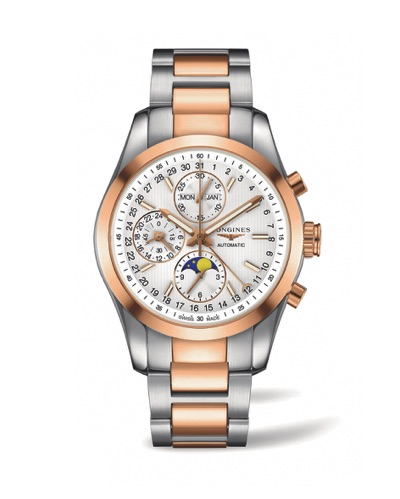

沉淀马术时光
浪琴表致力于诠释优雅精致的生活态度，为了与观赛者的高级定制服装相得益彰，品牌从马术赛场独具特色的要素中收获灵感，倾心打造全新康铂系列月相腕表（Conquest Classic Moonphase），礼赞这场马年马术收官盛事。
浪琴表康铂系列精钢玫瑰金月相计时腕表作为赛事指定腕表，巧妙延续了品牌对马术运动及其优雅精髓的盛情礼赞。该款式腕表直径42毫米，搭载自动上链机械计时机芯。银色表盘上9个条状应用时标涂有Super-LumiNova®夜光涂层，优雅烘托月相显示功能。半月形中心指针指示日期，防水功能达5个大气压，机芯运作可通过透明表背一览无余。
技术参数
腕表编号：精钢加18k玫瑰金表圈款L2.798.5.72.7
机 芯：自动上链机械机芯，L678机芯 (VAL 7751)，13¼法分，25个宝石轴承，振频28’800 次/小时
动力贮备：48小时
功 能：时、分、秒，9时位置设小秒针与24小时显示。星期、月份、月相。半月形中心指针指示日期。
计时功能：中心秒针顺时针转动，12时位置设30分钟累计计时盘，6时位置设12小时累计计时盘
表 壳：圆形，直径42.00毫米，精钢加18k玫瑰金表圈，抗磨损蓝宝石水晶镜面，涂有多层防反光涂层，螺旋式蓝宝石水晶表背
防水性能：5巴（50米）
表 盘：银色，9个条状应用时标，涂有Super-LumiNova®夜光涂层
指 针：镀铑或玫瑰金，时针和分针涂有Super-LumiNova®夜光涂层
表链/表带：精钢与18k玫瑰金，三重折叠式安全表扣与按压式开启装置
浪琴表优雅形象大使郭富城演绎康铂系列月相腕表
优雅形象大使郭富城年前出席第三届浪琴表香港马术大师赛，观摩这一突显香港全民马文化的运动盛事。作为一位马主和爱马之士，郭天王特别选戴康铂系列月相腕表，装点当天的优雅时刻。腕间精妙的机械运作与月相显示，与场上精湛骑术与卓越良驹相得益彰。
马术运动的专业、纯粹和强大与浪琴表的顶级制表技艺有着异曲同工之妙，完美诠释着彼此的精神内核，更是极致生活艺术的体现。